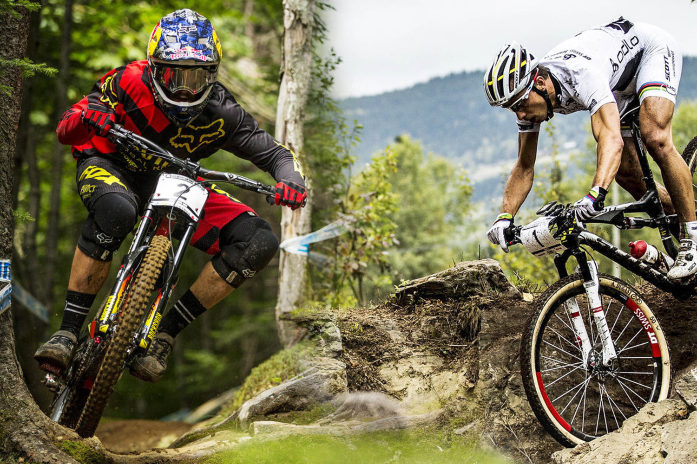
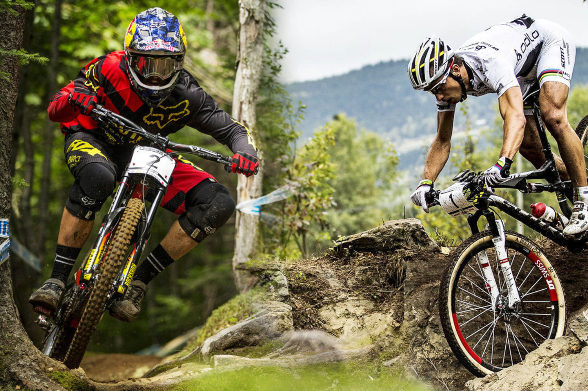

MOUTAIN BIKE
A EMOÇÃO SOBRE DUAS RODAS
 

Equipamentos
Alguns equipamentos são necessários e outros totalmente indispensáveis. Veja abaixo uma relação de alguns deles. Mas lembre-se: é só uma sugestão. Você pode acrescentar alguns itens ou retirar outros.
Capacete: Com certeza o item mais importante, protegendo a cabeça contra eventuais quedas, amortecendo impactos diretos contra pedras, raízes e árvores, além, é claro, do próprio chão. É feito de poliestireno, material leve e bom absorvedor de impactos. Existem capacetes especiais para downhill que cobrem a cabeça toda, devido as altas velocidades alcanças nesta modalidade do mountain bike.
Óculos: São necessários para a proteção dos olhos do ciclista, pois ele evita respingos de lama, pedrinhas e insetos de atingir a vista, atrapalhando a condução da bicicleta. Um óculos específico para mountain bike muitas vezes não tem lentes escuras, pois, de maneira geral, a trilha não é muito clara devido a densa vegetação, sendo a lente transparente ou âmbar.
Luvas: Também considerado um item importante, pois um bom controle da bicicleta depende de uma boa empunhadura. A luva ameniza o suor escorrido dos antebraços e o da própria mão, permitindo assim, um melhor desempenho. Além disso, quando se cai, a primeiro coisa que se faz é apoiar-se com as mãos, e usando luvas o que fica esfolado são elas e não a sua mão!
Camisa: Apesar de não ser indispensável, o uso de uma camisa apropriada pode nos trazer alguns benefícios. Geralmente estas camisas são produzidas com um tecido especial, como o “coolmax”, que tem como objetivo fazer com que a transpiração seja facilmente absorvida e evaporada, evitando que você fique encharcado. Além disso nestas camisas existem práticos bolsos nas costas, onde se podem colocar documentos e ferramentas.
Bermuda: Também feitas com tecidos especiais, a bermuda é um importante aliado para o nosso conforto, pois costumam ser acolchoadas na região perineal, atenuando assim a dor sentida em percursos mais longos. Além disso, deve ter tecido elástico, ficando bem “colada” ao corpo, evitando que em descidas a bermuda fique presa ao selim, vindo a poder causar um acidente.
Sapatilha: Deve ser utilizada num estagio mais avançado do ciclista, pois requer uma certa experiência. Como elas se fixam no pedal, pode-se também fazer força de baixo para cima, ou seja, puxando o pedal para si. Além disso, depois de encaixado os pés sempre se manterão na posição correta, acarretando assim um melhor desempenho.
Acessórios
Ciclocomputador: Permite que o ciclista controle melhor o seu ritmo, fornecendo uma ampla gama de informações úteis. Um ciclocomputador de boa qualidade costuma ter, pelo menos, sete funções: velocidades instantânea, média e máxima; distância; odômetro; cronômetro e relógio. Há modelos mais sofisticados que podem indicar freqüência cardíaca, altitude, temperatura, pressão atmosférica e possuem alarmes para níveis mínimos ou máximos de algumas funções.
Bar-Ends: O bar-end não é um acessório imprescindível, mas pode ser de bastante utilidade, principalmente para bikers que costumam enfrentar subidas. Ele ajuda a manter uma postura mais ereta e uma melhor distribuição de peso, além de propiciar mexer um pouco as mãos, evitando o formigamento.
Faróis e Refletores: Os refletores são acessórios obrigatórios por lei, devendo ser instalados na dianteira, na traseira e nos pedais. Há refletores do tipo pisca-eletrônico, que tem uma visibilidade maior, sendo indicados para ciclistas que gostem de pedalar à noite. Já a lanterna é um acessório para o mountain biker que costuma fazer trilhas à noite, devendo ter um farol de boa luminosidade.
Caramanhola: A famosa garrafinha! Nem é preciso dizer a sua importância, devendo sempre conter água fresca e potável. Existem modelos térmicos, que mantém a água gelada por mais tempo. Uma boa dica é botar a caramanhola no congelador na noite anterior à trilha, assim a água só vai descongelar completamente quando você estiver no meio do mato, podendo, assim, bebê-la bem geladinha.
Kit Trilha
Quando se for fazer uma trilha, é importante levar ferramentas para fazer pequenos consertos e algum material de primeiros socorros. Esse kit pode ser levado dentro de uma bolsinha de selim. Veja a lista abaixo:
Bomba-de-Ar e Kit Remendo: Ítens fundamentais para se fazer uma trilha, pois não é um pneu furado que vai estragar o nosso passeio. O kit remendo deve conter: cola vulcanizante; lixa; espátula e remendos de vários tamanhos. Já a bomba-de-ar deve ter bico compatível com a sua cãmara-de-ar (Presta ou Schaerer), Abaixo, um pequeno guia de como remendar o pneu:
1º Retire uma banda do pneu do aro utilizando a espátula.
2º Tire a tampinha da válvula e retire a cãmara.
3º Com a bomba encha um pouco a cãmara e veja por onde o ar sai.
4º Lixe em volta do furo.
5º Aplique a cola sem muito exagero e espere 5 minutos.
6º Retire o papel laminado do remendo e aplique o remendo sobre o local do furo.
7º Recoloque a cãmara no pneu.
8º Recoloque o pneu no aro e encha-o.
Ferramentas :
Para efetuar pequenos consertos na trilha deve-se levar: chaves allen (veja o tamanhodos parafusos de sua bicicleta), fenda e philips; chave de raios; saca-correntes e um pequeno alicate. Vale a pena procurar no mercado ferramentas do tipo “tudo-em-um” especiais para bicicleta, que englobam muitas dessas funções, polpando espaço e peso.
Primeiros-Socorros :
Leve sempre para trilha curativos para possíveis ferimentos que podem acorrer, são eles: atadura; esparadrapo; gaze; band-aid e um anti-séptico em spray. Levando esse material, você será capaz de sanar pequenas hemorragias e realizar imobilizações.